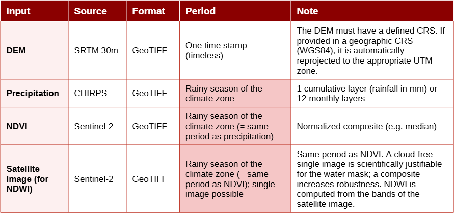
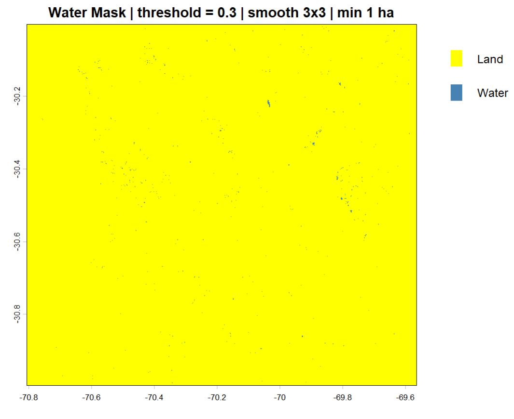
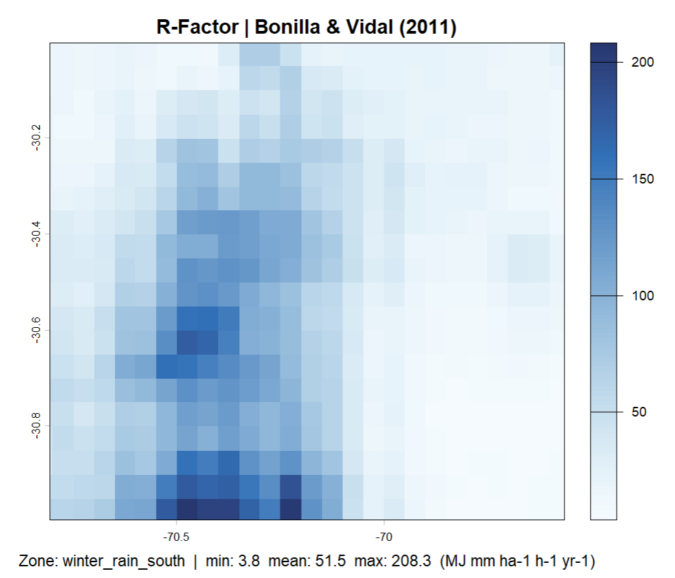
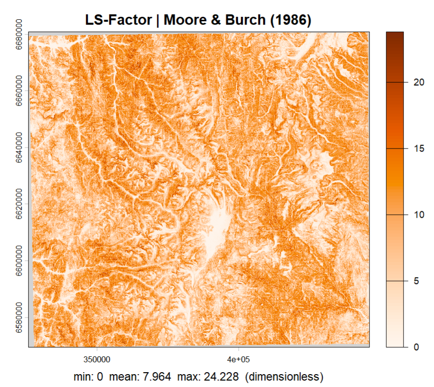
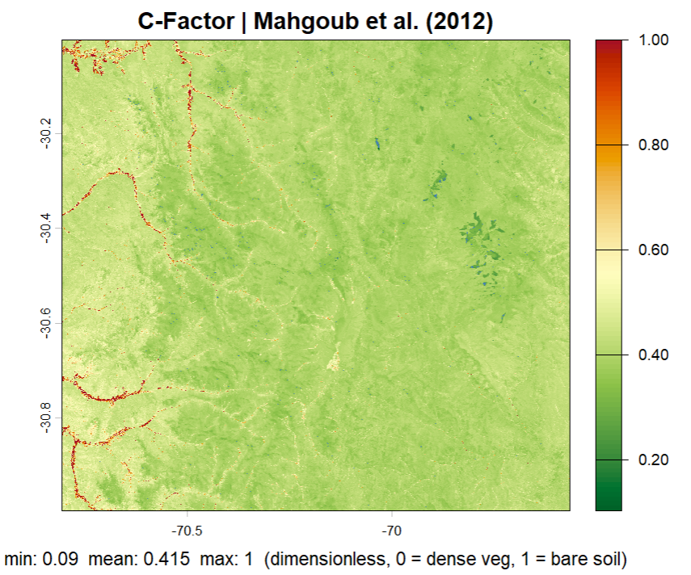
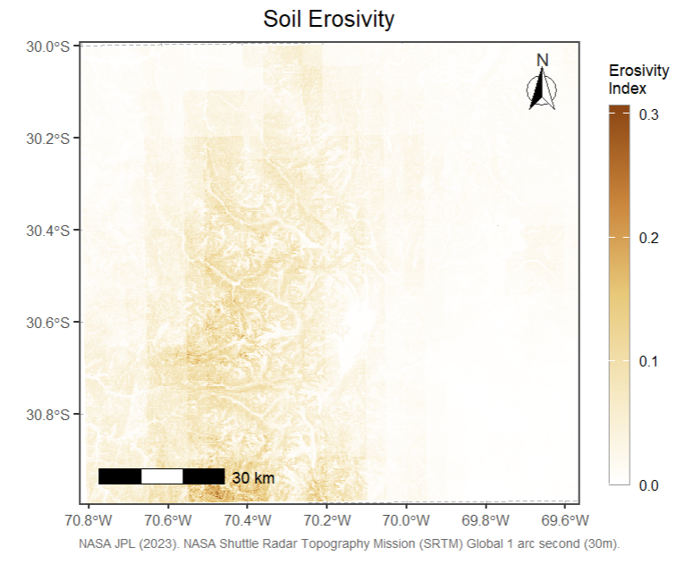

aridRUSLE estimates soil erosion risk in semi-arid and arid regions worldwide by computing the three remotely-sensed RUSLE factors R, LS, and C from freely available satellite and climate data
Overview
aridRUSLE is an R package implementing a modified RUSLE (Revised Universal Soil Loss Equation) approach for soil erosion risk analysis in semi-arid and arid regions worldwide. Rather than requiring all five classical RUSLE factors, the package focuses on three key factors derivable from easily accessible remote sensing and climate datasets: rainfall erosivity (R), topographic influence (LS), and vegetation cover (C). Soil erodibility (K) and conservation practices (P) are deliberately omitted due to typical data limitations in semi-arid research areas.
To ensure accurate C-factor estimation, the package includes a dedicated water masking step. Open water surfaces produce misleading NDVI values that would otherwise bias the vegetation cover factor — applying apply_water_mask() before calc_c_factor() removes these pixels and prevents them from propagating into the final erosion risk index.
aridRUSLE is designed for global applicability across semi-arid and arid climate regimes. The R-factor module supports five different empirical formulas, each calibrated for a distinct regional climate. The appropriate formula is automatically selected based on the geographic coordinates of the study area using a Köppen-like climate zone classification, or can be set manually. This makes the package readily applicable across the Mediterranean, Sahel, Arabian Peninsula, Central Asia, Australia, and South America without any manual formula lookup. ## Dependencies aridRUSLE requires the following R packages, which are installed automatically: terra, ggplot2, tidyterra, ggspatial, kgc
Data Requirements
The required input data are summarized in Table 1. The aggregation period for precipitation, NDVI, and satellite imagery (used for NDWI computation) depends on the climate zone of the study area and should correspond to the respective rainy season (see Table 2). The package automatically prints the recommended period at each call of calc_r_factor().

Climate Zone Detection
Before selecting and downloading input data, it is recommended to first determine the climate zone of the study area. The zone controls which R-factor formula is applied and defines the correct aggregation period for precipitation, NDVI, and satellite imagery (Table 1).
# Step 1: Get an overview of all supported climate zones
list_climate_zones()
# Step 2: Detect the climate zone from coordinates
get_climate_zone(lat = -30.5, lon = -70.2)
# Step 3: Get the recommended data period for that zone
get_season_recommendation("winter_rain_south")The output of get_season_recommendation() directly defines the time window for which precipitation (CHIRPS), NDVI, and satellite imagery (Sentinel-2) should be acquired and aggregated.
Water mask to mask out lakes
apply_water_mask() computes the Normalized Difference Water Index (NDWI) internally from a multi-band satellite image and uses it to mask open water pixels in a target raster such as an NDVI composite. It is a required preprocessing step before calc_c_factor(), as water surfaces produce misleading NDVI values. Optionally, a smoothing filter and a minimum patch size threshold can be applied to remove isolated artefacts and retain only true water bodies.
sentinel <- terra::rast("sentinel2.tif")
ndvi <- terra::rast("ndvi.tif")
ndvi_masked <- apply_water_mask(
target_raster = ndvi,
satelite_raster = sentinel,
green_band = 3,
nir_band = 8,
threshold = 0.3,
smooth = TRUE,
smooth_w = 3,
min_water_ha = 1,
return_ndwi = FALSE,
plot = TRUE
)
Region-specific Rainfall erosivity calculation (R-factor)
calc_r_factor() computes the RUSLE rainfall erosivity (R-factor) from a precipitation raster using an empirical formula automatically selected for the climate zone of the study area. The climate zone is detected from geographic coordinates via a Köppen-Geiger classification, or can be set manually. Five formulas are supported, each calibrated for a different semi-arid or arid climate regime.
precip <- terra::rast("chirps_seasonal.tif")
r_factor <- calc_r_factor(
precip_raster = precip,
lat = -30.5,
lon = -70.2,
climate_zone = NULL,
season_days = 243,
a = 0.171,
b = 1.212,
verbose = TRUE,
plot = TRUE
)
Calculation of topographic influence on erosion (LS-factor)
calc_ls_factor() computes the RUSLE topographic LS-factor from a digital elevation model (DEM) using the Moore & Burch (1986) approach. The factor combines slope length and slope steepness into a single dimensionless value representing the topographic influence on soil erosion. If the DEM is provided in a geographic CRS (WGS84), it is automatically reprojected to the appropriate UTM zone before computation.
dem <- terra::rast("srtm.tif")
ls_factor <- calc_ls_factor(
dem = dem,
verbose = TRUE,
plot = TRUE
)
Calculation of vegetation cover influence of erosion (C-factor)
calc_c_factor() computes the RUSLE vegetation cover factor (C-factor) from a water-masked NDVI composite using the exponential relationship of Mahgoub et al. (2012). The C-factor ranges from 0 (dense vegetation, no erosion) to 1 (bare soil, maximum erosion). It is strongly recommended to apply apply_water_mask() to the NDVI composite before passing it to this function.
ndvi <- terra::rast("ndvi.tif")
# Step 1: mask water pixels first
ndvi_masked <- apply_water_mask(target_raster = ndvi,
satelite_raster = sentinel)
# Step 2: compute C-factor from masked NDVI
c_factor <- calc_c_factor(
ndvi_raster = ndvi_masked,
verbose = TRUE,
plot = TRUE
)
Erosion risk map
calc_erosion_risk() combines the R, LS, and C factors into a dimensionless Erosion Risk Index (ERI) by normalising each factor to 0–1 and multiplying them pixel-wise. If the input rasters do not share the same geometry, they are automatically reprojected and resampled to match the LS-factor grid. The result is displayed as a publication-quality cartographic map with a north arrow, scale bar, and coordinate grid.
result <- calc_erosion_risk(
r_factor = r_factor,
ls_factor = ls_factor,
c_factor = c_factor,
normalize = TRUE,
resample_method = "bilinear",
plot = TRUE,
map_title = "Soil Erosivity",
figure_caption = NULL,
data_source = "NASA JPL (2023). SRTM Global 1 arc second (30m)"
)